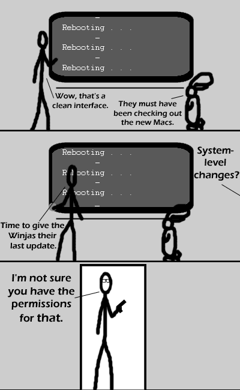

Comic JK 96
When I Feel Like It
⇤
<
?
>
⇥

⇤
<
?
>
⇥
Forum
.
RSS
.
Digg
.
Facebook
.
Reddit
.
Twitter
.
Stumbleupon
Bill Gates! If only you hadn't used up your quota for Zero Wing! >What you say? Isn't he retired? <Retired from CEO, but not from evil (and charity work, etc)> But macs are oh so awesome... Oh oh I have an idea! Let's all use unix systems! Yayayayayayay! >Macs are unixed based now... >>I dual-boot vista and linux (ubuntu) but that's just so i can game >>>Why not Wine? >>>>wwwwwwwwwwwwwwwwwwwwwwwwwwwwwwwwwaaaaaaaaaaaaaaaaaaaaaaaaaaaaaaaaaaaahhhhhhhhhhhhhhhhhhhhhhhhhhhh Man, this is just like when I faced Hitler in Wolfenstein! I second the dual-boot guy :P